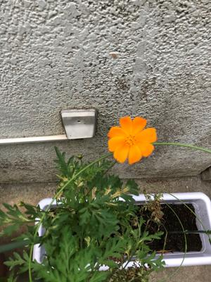

うるがいの話 ある日
最新: なは買エール【うるがいの話 ある日】とは 一日だけのプログです
『うるがいの話』の最新一日だけのプログで、通信料が少なく経済的だ。カニの画像をクリックすると全ての日付が載る『うるがいの話』サイトを表示します
|
|
【うるがいの話】 うるがい(ｳﾙｶﾞｲ urugai)とは、『もずくがに』の名前でとても大きくなります。 |
|---|---|
|
|
【カミマヤーの話】 猫のことを方言でマヤーといいます。カミマヤーとは、神の猫のことです。 |
|
【タナガーの話】 たながー（ﾀﾅｶﾞｰtanagaa）とは手長えびのことで、何種類かあり大きいのは車 エビぐらいになります。 |

|
【ぶながぁの話】 ぶながー(bunagaa)とは、赤い髪の毛、赤い身体、そして身長は１ｍ２０ｃｍ ぐらい、川の蟹を食べているの目撃された。場所は沖縄県国頭郡大宜味村のと ある村僕の隣近所に住んでいる爺さんから、聞いた話です。 |
|
|
【ギーマの話】 ギーマ(giima)とは、山原の里山に咲くスズランに似た、 花を付けます。実は食べられます、 気が付くと口の周りが紫になっています。 |
2021年12月16日 (木）なは買エール
16:23

半ば利用を諦めていたヨメだが、私の利用実績をふまえ『デジタル商品券』を
購入する。ところがである、ヨメのアンドロイドＯＳのスマホでは支払いのと
きカメラで利用店舗のＱＲコードを読めない！（その時は、店舗コードを手打
ちでデジタルサイトの店舗番号を入力）。いろいろアプリにカードをかけてい
るでしょう、と言うと、あ、不許可になっている！といろいろ、スマホをいじ
っている。もう大丈夫だろうと、今朝ユニクロで再度トライする、ダメ、ダメ
家に帰って一時間程、調べまくる。なは買エールサイトのＱＡをみたようだ、
アプリの設定でカメラの利用を許可していないと、カメラが動作しないと。こ
れって何？、ウェブアプリにカメラの設定があるのではないかを助言、私のは
アイホンのサファリをみるとカメラは許可になっている。ヨメのｃｈｒｏｍｅ
アプリの設定をみると、カメラは利用は許可しないになっていた。これだ！と
昨日コドモが、ボーナスが出たと家に持ってきた２千円のビザの包装に一緒に
あったお店のチラシのＱＲコードを、なは買エールウェブサイトから読ませて
みると、『このＱＲは買エール対象の店舗ではありません』とはじかれた。こ
れで解決。ヨメももとの職場はその筋の人、ネ、スマホの操作はついていけな
いでしょうとコソと言う。こんな、操作普通の人は出来ないと思うとヨメ。確
かに。
１６時２０分 ビットコインの総資産 ￥１６，１６８